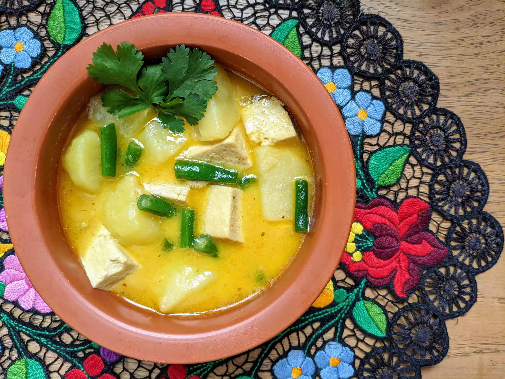

Thai-Inspired Vegan Coconut Curry

Description
Delicious vegan Thai coconut curry with panang curry paste. Serve over white rice.
Tastes best if cooked in the slow cooker for multiple hours, but it is also a good option for a quick meal.
Ingredients
- 2 tablespoons vegetable oil, divided, or as needed
- 1 (12 ounce) package extra-firm tofu, cubed
- ½ medium yellow onion, thinly sliced
- 4 teaspoons panang curry paste
- 1 (14 ounce) can coconut milk
- 1 cup vegetable broth
- 4 large red potatoes, peeled and cubed
- ¼ cup string beans
Steps
- Heat 1 tablespoon oil in a nonstick frying pan over medium-high heat. Add tofu and fry on all sides until golden, 5 to 7 minutes. Remove from heat.
- While tofu is frying, heat remaining oil in a separate pan over medium heat. Saute onion until soft, 5 to 7 minutes. Stir in curry paste. Pour in coconut milk and vegetable broth; bring to a boil. Add potatoes, reduce heat, and simmer, covering the pot loosely, until potatoes are halfway cooked, about 10 minutes.
- Stir in beans and continue to simmer until potatoes are almost soft, about 5 minutes more. Stir in tofu and heat through, about 5 minutes. Serve in individual bowls.